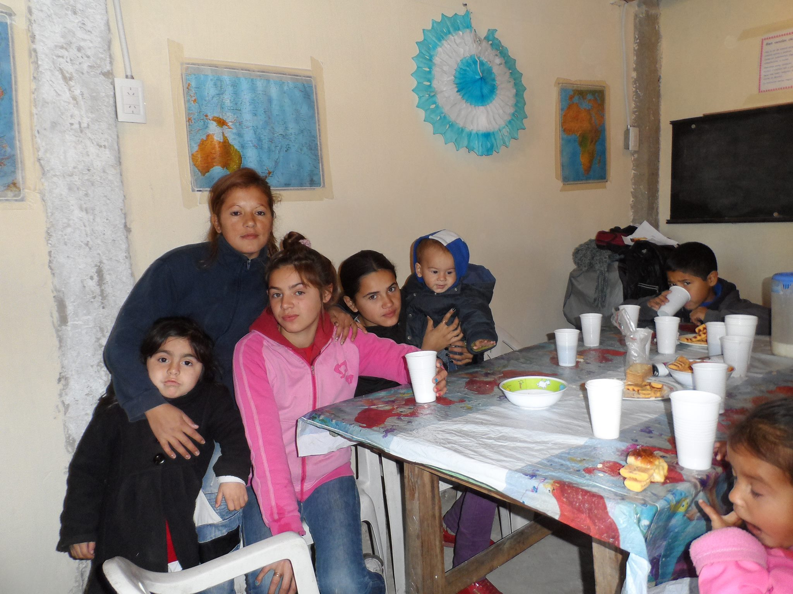
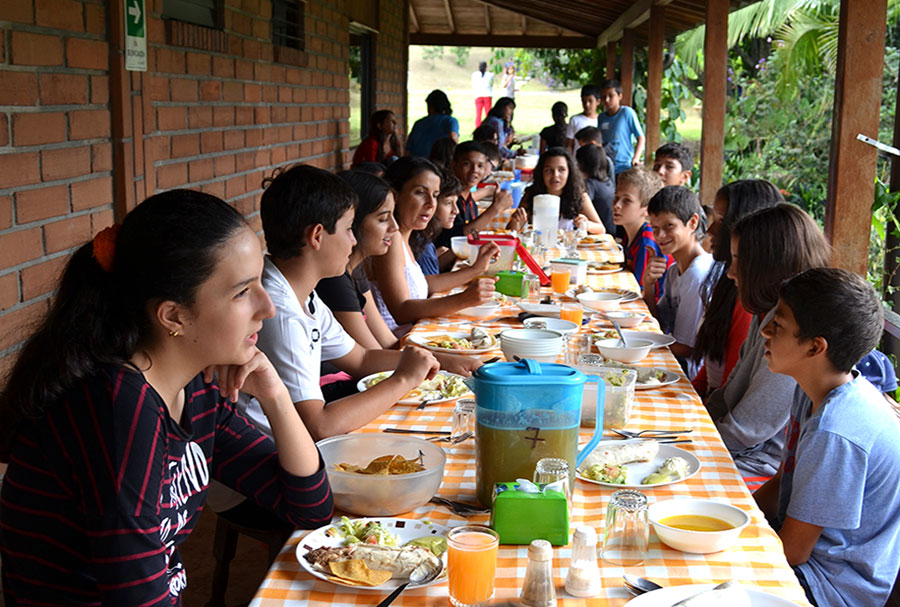
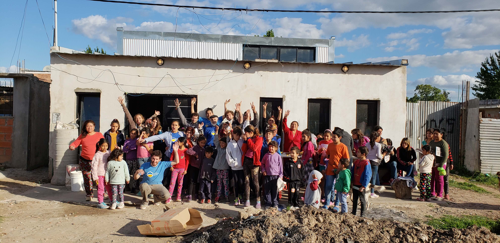
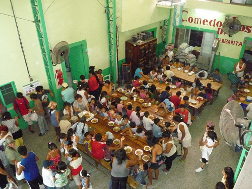

O inicia sesion con
Tu ayuda es transformación
Trabajemos entre todos para reducir el hambre, mejorar la nutrición y evitar el desperdicio de alimentos.
Sobre nosotros
Trabajamos para reducir el desperdicio de alimentos, concientizando a las personas sobre dicha problemática. Al mismo tiempo, aportamos nuestro granito de arena, mediante la colaboración de todos para mejorar la calidad alimentaria de miles de personas del AMBA.
Ayudar a quienes lo necesitan
No despercidiar alimentos
Nuestro objetivo es alinear, manteniendo siempre una línea recta
¿Cómo lograr este objetivo?
La tarea que realizamos todos los días es posible gracias al compromiso de distintas personas. Por eso decimos que somos una gran cadena solidaria en la que cada parte es fundamental para cumplir con nuestra misión.
Novedades
Conocer lo que hacemos es una forma de ser parte. Enterate de nuestras últimas noticias, eventos y acciones

Récord de donaciones
Esta primer semana de octubre d 2022,
el merendero “Sembrand Esperanzas”,
de la localidad de Glew recibió una
donación de más de 200 alimentos
no perecederos, lácteos y verduras...
Ver mas..

Quilmes nos necesita
Varios merenderos de la zona de
quilmes oeste requiere de la atención
Muchos de los vecinos denuncian falta
de ayuda del Estado...
Ver mas..

Nuevo comedor
comunitario
Logramos juntar casi 500 kilos de
alimentos en la ultima colecta y l nuestro
objetivo es duplicar este numero
para llegar a más comedores...
Ver mas..

La pandemia
no da tregua
A más de un año de la pandemia
ocasionada por el COVID 19, se duplicó
cantidad de personas atendidas por las
organizaciones comunitarias...
Ver mas..
colocá tu provincia, localidad o ciudad..

DATOS DE TU ORGANIZACIÓN
Concienticemos
10 maneras de ayudar a quiénes lo necesitan y a nuestro planeta
Reciclado tapitas plásticas para la Fundacion Garrahan
Consumo responsable: formas de evitar el desperdicio de alimentos
La importancia del saber
Unos 1300 millones de toneladas de comida producida para el consumo humano, termina en vertederos. Sin embargo, una de cada nueve personas en el mundo sufre de hambre. Contamos algunas iniciativas para reducir el desperdicio de alimentos hasta convertirlo en un arma en la lucha por llegar a la meta del “Hambre Cero”.
\Leer más >
COLABORA CON LA FUNDACION
Frente a la emergencia sanitaria miles de chicos y chicas siguen necesitando de los comedores sociales para acceder a un plato de comida. Necesitamos tu aporte para poder seguir ayudando a estas instituciones.